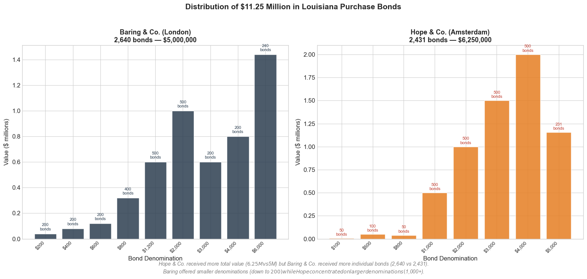
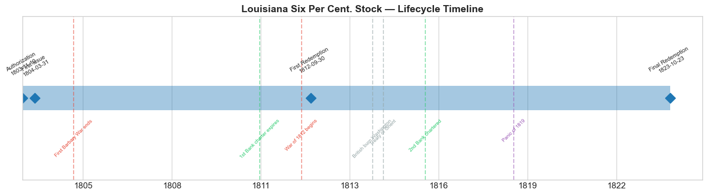
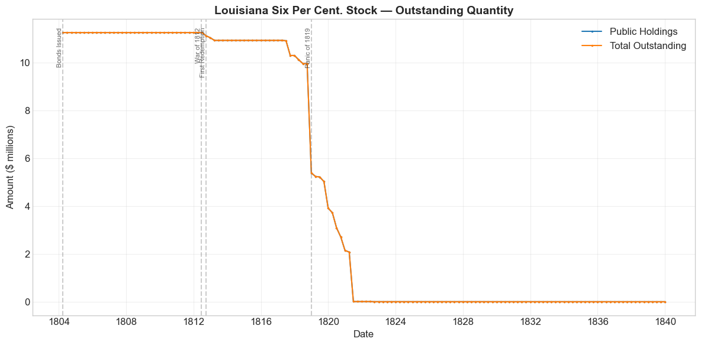
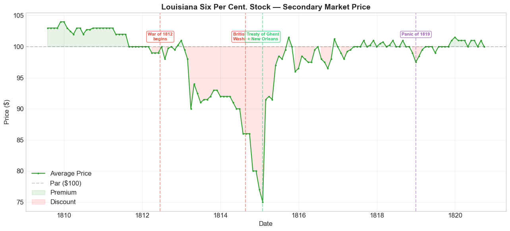
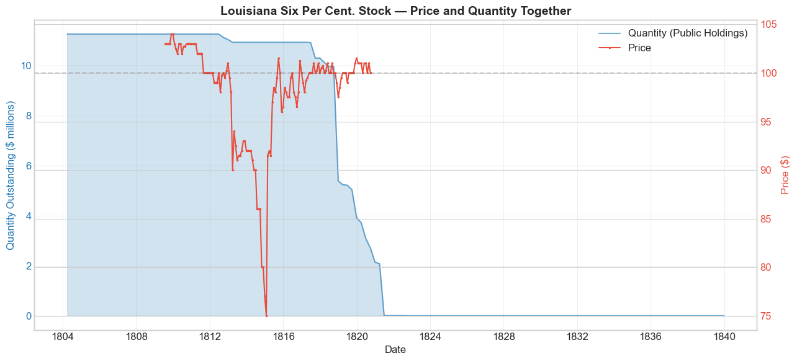
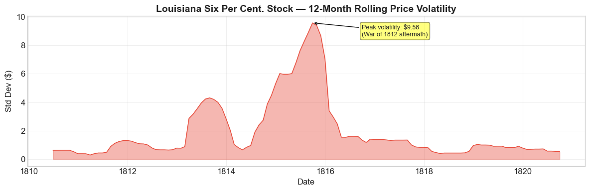
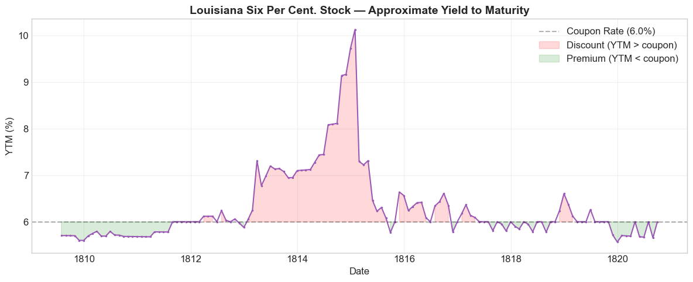

Bond Biography: Louisiana Six Per Cent. Stock#
The Bond That Bought an Empire#
An enhanced chapter from the Hall-Payne-Sargent US Federal Bond Database (2,857 issues, 1776–1960)
Bond ID (L1): 20044 | Category: Interest Bearing > Marketable > Long Term Bond
import pandas as pd
import numpy as np
import matplotlib.pyplot as plt
import matplotlib.patches as mpatches
import matplotlib.dates as mdates
from datetime import datetime
import calendar as cal
import warnings
warnings.filterwarnings('ignore')
plt.style.use('seaborn-v0_8-whitegrid')
plt.rcParams.update({
'figure.figsize': (12, 6),
'font.size': 12,
'axes.titlesize': 14,
'axes.labelsize': 12,
'figure.dpi': 100
})
# Load the bond database
store = pd.HDFStore('../data/BondDF.h5', mode='r')
BondList = store['BondList']
BondQuant = store['BondQuant']
BondPrice = store['BondPrice']
store.close()
BondQuant_T = BondQuant.transpose()
BondPrice_T = BondPrice.transpose()
bond_id = 20044
first_issue_date = pd.Timestamp("1804-03-31")
print(f"Loaded data for: Louisiana Six Per Cent. Stock (ID: {bond_id})")
print(f"Database contains {len(BondList)} bond issues")
Loaded data for: Louisiana Six Per Cent. Stock (ID: 20044)
Database contains 2857 bond issues
A Territory for a Promissory Note#
In the spring of 1803, Napoleon Bonaparte faced a problem. His ambitions stretched across Europe, but his treasury was hemorrhaging. The army that had been dispatched to reconquer Saint-Domingue (Haiti) was devastated by yellow fever and a ferocious slave revolt led by Toussaint Louverture. The Peace of Amiens with Britain was crumbling. War was coming — war that would require vast sums of money that France simply did not have.
Across the Atlantic, President Thomas Jefferson had his own preoccupation. American farmers and merchants depended on the Mississippi River to move goods to market, and the port of New Orleans was the bottleneck through which western commerce flowed. When Spain secretly retroceded Louisiana to France in 1800, Jefferson dispatched James Monroe to Paris with authority to spend up to $10 million for New Orleans and the Floridas alone.
What happened next stunned everyone. On April 30, 1803, Napoleon’s foreign minister Talleyrand offered not just New Orleans, but the entire Louisiana Territory — 828,000 square miles of land stretching from the Gulf of Mexico to the Canadian border, from the Mississippi to the Rocky Mountains. The price: 80 million francs, roughly $15 million. At approximately four cents per acre, it remains the greatest real estate bargain in recorded history.
But Jefferson’s government did not have $15 million in cash. The annual revenue of the United States in 1803 was barely $11.8 million. The solution was quintessentially modern: pay with debt. The Louisiana Six Per Cent. Stock — Bond ID 20044 in our database — was the instrument that turned an empire of land into a column of numbers in a banker’s ledger.
This is the story of that bond.
The Deal#
The Louisiana Purchase was not a single transaction but a carefully structured three-part agreement signed on April 30, 1803:
1. The Cession Treaty — France formally ceded its claim to the Louisiana Territory to the United States. Crucially, France did not transfer ownership of the land — much of it was inhabited and governed by dozens of Native American nations. What France transferred was its imperial claim, recently acquired from Spain in the secret Treaty of San Ildefonso (1800).
2. The Stock Convention (60 Million Francs) — The United States committed to pay France 60 million francs (approximately $11.25 million at the fixed exchange rate of $1 = 5⅓ francs). Rather than pay cash, the U.S. would issue $11.25 million in 6% bonds with a 15-year term. Interest was payable quarterly, and — in a provision that would prove consequential — payments could be made in Paris, London, or Amsterdam, in local currencies.
3. The Claims Convention ($3.75 Million) — The United States agreed to assume $3.75 million in debts that France owed to American merchants, bringing the total cost to $15 million (80 million francs).
The total purchase price of $15 million, while modest in absolute terms, represented a staggering fiscal commitment for the young republic. It amounted to roughly 19% of the existing national debt of $80 million and consumed nearly 95% of annual federal revenue. There was no precedent for a sovereign debt issuance on this scale by the United States.
Baring & Hope’s Agreement with the French Republic#
Napoleon needed money now — not in fifteen years when the bonds matured, and not even in quarterly interest installments. He needed liquid capital to fund the army massing at Boulogne for a planned invasion of England. The United States, for its part, could not simply hand over millions in gold.
Enter Francis Baring.
It was one of history’s convenient coincidences that Francis Baring, head of Baring & Co. — Britain’s most powerful merchant bank — happened to be in Paris in 1803. Baring, together with the Amsterdam-based banking house of Hope & Co., negotiated what was effectively a massive underwriting deal with the French Republic.
The structure was elegant:
France transferred the full $11.25 million in U.S. bonds to Baring & Co. and Hope & Co.
The banks committed to pay France 52 million francs ($9.75 million) — a 13⅓% discount (or commission) on the face value.
Payment schedule: 6 million francs in the first month after receiving the bonds, then 2 million francs per month for the next 23 months.
The United States would repay the banks the full $11.25 million over 15 years (with interest), then redeem the principal in four annual installments of $2.8125 million.
In effect, Baring and Hope purchased the Louisiana Territory from France and resold it to the United States. This was entirely unlike every other major U.S. land acquisition — the Floridas, the Gadsden Purchase, and Alaska were all paid for directly in dollars. The Louisiana Purchase was financed by what we would today call a syndicated sovereign bond offering, intermediated by two of Europe’s most prestigious banking houses.
Secretary of the Treasury Albert Gallatin later estimated the two banks’ profit at roughly $3 million — a handsome return for facilitating the largest land deal in history. Other estimates place the figure closer to $1.5 million.
Bond Features#
Feature |
Detail |
|---|---|
Full Name |
Louisiana Six Per Cent. Stock |
Authorizing Act |
November 10, 1803 |
First Issue Date |
March 31, 1804 |
Term of Loan |
15 years |
First Redemption |
September 30, 1812 |
Final Redemption |
October 23, 1823 |
Coupon Rate |
6.0% per annum |
Payment Frequency |
Quarterly (4 times/year) |
Amount Issued |
$11.25 million |
Price Sold |
Par (100) |
Callable |
No |
Payable in Coin |
Yes |
Interest Payable In |
London (£), Paris (₣), or Amsterdam (ƒ) |
Principal Repayment |
Four annual installments of $2.8125M (1819–1823) |
# Display full bond features from database
row = BondList.loc[20044]
display_cols = [
"Treasury's Name Of Issue", 'Authorizing Act', 'Term Of Loan',
'First Issue Date', 'First Redemption Date', 'Final Redemption Date',
'Coupon Rate', 'Coupons Per Year', 'Callable', 'Coin',
'Authorized Amount', 'Price Sold'
]
print('Bond Features from Database:')
print('=' * 55)
for col in display_cols:
if col in row.index:
print(f' {col:<30} {row[col]}')
Bond Features from Database:
=======================================================
Treasury's Name Of Issue Louisiana Six Per Cent. Stock
Authorizing Act November 10, 1803
Term Of Loan 15 years
First Issue Date 1804-03-31 00:00:00
First Redemption Date 1812-09-30 00:00:00
Final Redemption Date 1823-10-23 00:00:00
Coupon Rate 6.0
Coupons Per Year 4.0
Callable 0.0
Coin 1.0
Authorized Amount nan
Price Sold 1.0
Bond Distribution: London and Amsterdam#
On December 21, 1803, Alexander Baring (Francis’s son, who handled the operational details) requested that the United States issue the stock in specific denominations, with specific names inscribed on each certificate. The U.S. agreed, effectively giving full control of the stock to the two banks.
The $11.25 million in bonds were split between the two banking houses as follows:
Baring & Co. (London): 2,640 bonds totaling $5,000,000
Denomination |
Number of Bonds |
Total Value |
|---|---|---|
$200 |
200 |
$40,000 |
$400 |
200 |
$80,000 |
$600 |
200 |
$120,000 |
$800 |
400 |
$320,000 |
$1,200 |
500 |
$600,000 |
$2,000 |
500 |
$1,000,000 |
$3,000 |
200 |
$600,000 |
$4,000 |
200 |
$800,000 |
$6,000 |
240 |
$1,440,000 |
Hope & Co. (Amsterdam): 2,431 bonds totaling $6,250,000
Denomination |
Number of Bonds |
Total Value |
|---|---|---|
$100 |
50 |
$5,000 |
$500 |
100 |
$50,000 |
$800 |
50 |
$40,000 |
$1,000 |
500 |
$500,000 |
$2,000 |
500 |
$1,000,000 |
$3,000 |
500 |
$1,500,000 |
$4,000 |
500 |
$2,000,000 |
$5,000 |
231 |
$1,155,000 |
# Bond Distribution Visualization
fig, axes = plt.subplots(1, 2, figsize=(16, 7))
# --- Baring & Co. (London) ---
baring_denom = [200, 400, 600, 800, 1200, 2000, 3000, 4000, 6000]
baring_count = [200, 200, 200, 400, 500, 500, 200, 200, 240]
baring_value = [d * c / 1e6 for d, c in zip(baring_denom, baring_count)]
baring_labels = [f'${d:,}' for d in baring_denom]
bars1 = axes[0].bar(range(len(baring_denom)), baring_value, color='#2c3e50', alpha=0.85, edgecolor='white')
axes[0].set_xticks(range(len(baring_denom)))
axes[0].set_xticklabels(baring_labels, rotation=45, ha='right', fontsize=9)
axes[0].set_title('Baring & Co. (London)\n2,640 bonds — $5,000,000', fontsize=13, fontweight='bold')
axes[0].set_ylabel('Value ($ millions)')
axes[0].set_xlabel('Bond Denomination')
for i, (v, c) in enumerate(zip(baring_value, baring_count)):
axes[0].text(i, v + 0.02, f'{c}\nbonds', ha='center', va='bottom', fontsize=8, color='#2c3e50')
# --- Hope & Co. (Amsterdam) ---
hope_denom = [100, 500, 800, 1000, 2000, 3000, 4000, 5000]
hope_count = [50, 100, 50, 500, 500, 500, 500, 231]
hope_value = [d * c / 1e6 for d, c in zip(hope_denom, hope_count)]
hope_labels = [f'${d:,}' for d in hope_denom]
bars2 = axes[1].bar(range(len(hope_denom)), hope_value, color='#e67e22', alpha=0.85, edgecolor='white')
axes[1].set_xticks(range(len(hope_denom)))
axes[1].set_xticklabels(hope_labels, rotation=45, ha='right', fontsize=9)
axes[1].set_title('Hope & Co. (Amsterdam)\n2,431 bonds — $6,250,000', fontsize=13, fontweight='bold')
axes[1].set_ylabel('Value ($ millions)')
axes[1].set_xlabel('Bond Denomination')
for i, (v, c) in enumerate(zip(hope_value, hope_count)):
axes[1].text(i, v + 0.02, f'{c}\nbonds', ha='center', va='bottom', fontsize=8, color='#c0392b')
# Annotation
fig.suptitle('Distribution of $11.25 Million in Louisiana Purchase Bonds',
fontsize=15, fontweight='bold', y=1.02)
fig.text(0.5, -0.02,
'Hope & Co. received more total value ($6.25M vs $5M) but Baring & Co. received more individual bonds (2,640 vs 2,431).\n'
'Baring offered smaller denominations (down to $200) while Hope concentrated on larger denominations ($1,000+).',
ha='center', fontsize=10, style='italic', color='gray')
plt.tight_layout()
plt.show()

Bond Lifecycle#
The Louisiana Six Per Cent. Stock had a well-defined 20-year arc from authorization to final redemption:
November 10, 1803 — Authorized by act of Congress
March 31, 1804 — First bonds issued and delivered to Baring & Hope
1804–1812 — Quarterly interest payments; bonds trade on secondary markets in London, Amsterdam, and (eventually) New York
September 30, 1812 — First redemption begins; coincides almost exactly with the outbreak of the War of 1812
1819–1823 — Principal repaid in four annual installments of $2.8125 million
October 23, 1823 — Final redemption; all bonds retired
# Bond Lifecycle Timeline
fig, ax = plt.subplots(figsize=(14, 4))
dates = [
('Authorization', '1803-11-10'),
('First Issue', '1804-03-31'),
('First Redemption', '1812-09-30'),
('Final Redemption', '1823-10-23')
]
events = [
('First Barbary War ends', '1805-06-10', 'war'),
('1st Bank charter expires', '1811-03-03', 'legislation'),
('War of 1812 begins', '1812-06-18', 'war'),
('British burn Washington', '1814-08-24', 'other'),
('Treaty of Ghent', '1814-12-24', 'other'),
('2nd Bank chartered', '1816-04-10', 'legislation'),
('Panic of 1819', '1819-01-01', 'crisis')
]
d0 = datetime.strptime(dates[0][1], '%Y-%m-%d')
d1 = datetime.strptime(dates[-1][1], '%Y-%m-%d')
ax.barh(0, (d1 - d0).days, left=mdates.date2num(d0), height=0.3,
color='#1f77b4', alpha=0.4, label='Bond Lifetime')
for label, date_str in dates:
d = datetime.strptime(date_str, '%Y-%m-%d')
ax.plot(mdates.date2num(d), 0, 'D', color='#1f77b4', markersize=10)
ax.annotate(f'{label}\n{date_str}', (mdates.date2num(d), 0.25),
ha='center', va='bottom', fontsize=8, rotation=30)
colors = {'war': '#e74c3c', 'crisis': '#9b59b6', 'legislation': '#2ecc71',
'other': '#95a5a6', 'monetary': '#f39c12'}
for name, date_str, cat in events:
d = datetime.strptime(date_str, '%Y-%m-%d')
ax.axvline(mdates.date2num(d), color=colors.get(cat, 'gray'), alpha=0.5, linestyle='--')
ax.annotate(name, (mdates.date2num(d), -0.25), ha='center', va='top',
fontsize=7, rotation=45, color=colors.get(cat, 'gray'))
ax.set_yticks([])
ax.xaxis.set_major_formatter(mdates.DateFormatter('%Y'))
ax.set_title('Louisiana Six Per Cent. Stock — Lifecycle Timeline', fontsize=14, fontweight='bold')
ax.set_ylim(-1, 1)
plt.tight_layout()
plt.show()

Historical Context: Wars, Panics, and Bond Prices#
The Louisiana Six Per Cent. Stock lived through one of the most turbulent periods in early American history. Three major forces shaped its market performance:
The First Barbary War (1801–1805)#
Already underway when the bonds were authorized, the naval conflict with the Barbary States of North Africa was a modest fiscal burden. The war’s cost was manageable and its successful conclusion in 1805 actually bolstered confidence in the young republic. Bond prices during this period remained steady and at or above par.
The War of 1812 (1812–1815)#
This was the defining crisis of the bond’s lifetime. When war with Britain broke out in June 1812, the impact on the Louisiana bonds was severe. Britain was the world’s dominant naval power, and the war disrupted Atlantic trade — the very trade on which U.S. tariff revenues (and thus the government’s ability to service its debt) depended.
The price data tells the story vividly: bonds that had traded comfortably at $100–$104 plunged to $75 by January 1815 — a maximum drawdown of -27.9%. The burning of Washington, D.C. on August 24, 1814, was a particularly grim moment for holders of American government debt.
But the recovery was equally dramatic. When news of the Treaty of Ghent (December 24, 1814) and Andrew Jackson’s victory at New Orleans (January 8, 1815) reached financial markets, prices snapped back with a +22% surge in February 1815. By mid-1815, bonds were again trading near par.
The Panic of 1819#
America’s first major financial crisis struck just as the Louisiana bonds were entering their redemption phase. The panic — triggered by the collapse of a speculative land boom, tightening credit by the Second Bank of the United States, and a drop in cotton prices — caused widespread bank failures. However, the bond was already being redeemed by this point, and the U.S. government honored every payment on schedule, reinforcing confidence in federal credit even as state banks and private borrowers defaulted across the country.
Bond Quantity Over Time#
The bond’s outstanding quantity peaked at $11.25 million upon issuance on March 31, 1804. The full amount remained outstanding for over eight years, until the first redemption in September 1812. The principal was then paid down in four annual installments of $2.8125 million between 1819 and 1823.
# Bond quantity over time
fig, ax = plt.subplots(figsize=(12, 6))
for stype in ['Public Holdings', 'Total Outstanding']:
try:
s = BondQuant_T.loc[(20044, stype)]
s = s[s.notna()]
if len(s) > 0:
ax.plot(s.index, s.values / 1e6, marker='.', markersize=3, linewidth=1.5, label=stype)
except KeyError:
pass
ax.set_title('Louisiana Six Per Cent. Stock — Outstanding Quantity', fontsize=14, fontweight='bold')
ax.set_xlabel('Date')
ax.set_ylabel('Amount ($ millions)')
ax.legend()
ax.grid(True, alpha=0.3)
events = {
'1804-03-31': 'Bonds Issued',
'1812-06-18': 'War of 1812',
'1812-09-30': 'First Redemption',
'1819-01-01': 'Panic of 1819'
}
for date_str, label in events.items():
d = pd.Timestamp(date_str)
ax.axvline(d, color='gray', alpha=0.4, linestyle='--')
ax.text(d, ax.get_ylim()[1]*0.97, label, rotation=90, va='top', ha='right', fontsize=8, alpha=0.7)
plt.tight_layout()
plt.show()

Secondary Market Prices: A Bond’s Life in the Market#
The two banks began reselling the bonds almost immediately upon receipt in 1804. Within a year, only about $4 million worth remained on their combined balance sheets — a testament to the appetite for U.S. government debt among European investors.
Marketing innovation: Baring & Co. employed a clever strategy. They issued partial certificates at 5.5% interest — half a percent below the 6% the United States was paying them. This 0.5% spread served as Baring’s fee, and was sometimes used to buy back bonds on the open market. By breaking bonds into smaller partial certificates, they made the securities accessible to a broader class of investors beyond the ultra-wealthy.
Dividends were payable in pound sterling in London, francs in Paris, and Dutch guilders in Amsterdam — making these among the most internationally fungible securities of their era.
Price Statistics#
Overall (1809–1820): Mean $98.14, Range $75.00–$104.00, Std Dev $5.28 (135 monthly observations)
Period |
Mean |
Std Dev |
Min |
Max |
Obs |
|---|---|---|---|---|---|
Issue to First Redemption (1804–1812) |
$101.66 |
$1.65 |
$98.00 |
$104.00 |
39 |
First Redemption to Final (1812–1823) |
$96.74 |
$5.56 |
$75.00 |
$101.50 |
97 |
The pre-war premium ($101–104, above par) reflected strong confidence in U.S. credit. The wartime collapse and recovery is one of the most dramatic episodes in early American bond markets.
# Annotated price chart
fig, ax = plt.subplots(figsize=(13, 6))
s = BondPrice_T.loc[(20044, 'Average')]
s = pd.to_numeric(s, errors='coerce').dropna()
if len(s) > 0:
ax.plot(s.index, s.values, marker='.', markersize=4, linewidth=1.5, color='#2ca02c', label='Average Price')
ax.axhline(100, color='black', alpha=0.2, linestyle='--', label='Par ($100)')
ax.fill_between(s.index, s.values, 100, where=(s.values >= 100), alpha=0.1, color='green', label='Premium')
ax.fill_between(s.index, s.values, 100, where=(s.values < 100), alpha=0.1, color='red', label='Discount')
ax.set_title('Louisiana Six Per Cent. Stock — Secondary Market Price', fontsize=14, fontweight='bold')
ax.set_xlabel('Date')
ax.set_ylabel('Price ($)')
ax.legend(loc='lower left')
ax.grid(True, alpha=0.3)
# Annotate key events
annotations = [
('1812-06-18', 'War of 1812\nbegins', '#e74c3c'),
('1814-08-24', 'British burn\nWashington', '#e74c3c'),
('1815-01-31', 'Treaty of Ghent\n+ New Orleans', '#2ecc71'),
('1819-01-01', 'Panic of 1819', '#9b59b6'),
]
for date_str, label, color in annotations:
d = pd.Timestamp(date_str)
ax.axvline(d, color=color, alpha=0.5, linestyle='--')
ax.text(d, ax.get_ylim()[1]*0.97, label, rotation=0, va='top', ha='center',
fontsize=8, color=color, fontweight='bold',
bbox=dict(boxstyle='round,pad=0.3', facecolor='white', alpha=0.8, edgecolor=color))
plt.tight_layout()
plt.show()

# Price and Quantity — dual-axis chart
fig, ax1 = plt.subplots(figsize=(13, 6))
# Quantity (left axis)
for stype in ['Public Holdings', 'Total Outstanding']:
try:
q = BondQuant_T.loc[(20044, stype)]
q = q[q.notna()]
if len(q) > 0:
ax1.fill_between(q.index, q.values / 1e6, alpha=0.2, color='#1f77b4')
ax1.plot(q.index, q.values / 1e6, color='#1f77b4', alpha=0.6, label=f'Quantity ({stype})')
break
except KeyError:
pass
ax1.set_xlabel('Date')
ax1.set_ylabel('Quantity Outstanding ($ millions)', color='#1f77b4')
ax1.tick_params(axis='y', labelcolor='#1f77b4')
# Price (right axis)
ax2 = ax1.twinx()
p = BondPrice_T.loc[(20044, 'Average')]
p = pd.to_numeric(p, errors='coerce').dropna()
if len(p) > 0:
ax2.plot(p.index, p.values, color='#e74c3c', marker='.', markersize=3, linewidth=1.5, label='Price')
ax2.axhline(100, color='black', alpha=0.15, linestyle='--')
ax2.set_ylabel('Price ($)', color='#e74c3c')
ax2.tick_params(axis='y', labelcolor='#e74c3c')
ax1.set_title('Louisiana Six Per Cent. Stock — Price and Quantity Together', fontsize=14, fontweight='bold')
ax1.grid(True, alpha=0.3)
lines1, labels1 = ax1.get_legend_handles_labels()
lines2, labels2 = ax2.get_legend_handles_labels()
ax1.legend(lines1 + lines2, labels1 + labels2, loc='upper right')
plt.tight_layout()
plt.show()

Detected Price and Quantity Events#
The following significant movements were auto-detected in the data, with causal analysis:
Date |
Type |
Change |
Explanation |
|---|---|---|---|
1813-03 |
Price drop |
-8.2% |
Early war pessimism. The U.S. invasion of Canada had failed, and the Royal Navy was blockading American ports, strangling the tariff revenues on which debt service depended. |
1814-10 |
Price drop |
-7.0% |
The burning of Washington (Aug 1814) shattered confidence. Holders of American debt saw their debtor’s capital in flames. |
1815-02 |
Price spike |
+22.0% |
Peace! News of the Treaty of Ghent and Jackson’s victory at New Orleans reached European markets. The price snapped back violently. |
1815-05 |
Price spike |
+6.0% |
Continued post-war recovery. The U.S. had emerged intact and was resuming trade. |
1818-12 |
Quantity decrease |
-45.9% |
First major principal redemption tranche. The U.S. was paying down debt ahead of the Panic. |
1821-06 |
Quantity decrease |
-99.6% |
Near-complete redemption. Despite the Panic of 1819, the U.S. honored every payment. |
1823-12 |
Quantity decrease |
-100% |
Final redemption. The bond was fully retired on schedule. |
Price Volatility#
The War of 1812 dominates the volatility story. Before the war, the Louisiana bonds were among the most stable securities available — trading quietly at or just above par with minimal month-to-month variation. The war changed everything.
Maximum drawdown: -27.9% (from peak of $104.00 on November 30, 1809, to trough of $75.00 on January 31, 1815)
Average monthly return: 0.006%
Fastest recovery: The +22% surge in February 1815 remains one of the sharpest single-month gains in the history of U.S. government bonds.
# Rolling volatility (12-month window)
p = BondPrice_T.loc[(20044, 'Average')]
p = pd.to_numeric(p, errors='coerce').dropna()
if len(p) >= 12:
rolling_std = p.rolling(window=12).std().dropna()
fig, ax = plt.subplots(figsize=(12, 4))
ax.fill_between(rolling_std.index, rolling_std.values, alpha=0.4, color='#e74c3c')
ax.plot(rolling_std.index, rolling_std.values, color='#e74c3c', linewidth=1)
ax.set_title('Louisiana Six Per Cent. Stock — 12-Month Rolling Price Volatility',
fontsize=14, fontweight='bold')
ax.set_xlabel('Date')
ax.set_ylabel('Std Dev ($)')
ax.grid(True, alpha=0.3)
# Annotate the peak
peak_idx = rolling_std.idxmax()
peak_val = rolling_std.max()
ax.annotate(f'Peak volatility: ${peak_val:.2f}\n(War of 1812 aftermath)',
xy=(peak_idx, peak_val), xytext=(peak_idx + pd.DateOffset(months=12), peak_val * 0.9),
arrowprops=dict(arrowstyle='->', color='black'), fontsize=9,
bbox=dict(boxstyle='round,pad=0.3', facecolor='yellow', alpha=0.5))
plt.tight_layout()
plt.show()
else:
print('Insufficient data for rolling volatility (need >= 12 observations)')

Approximate Yield to Maturity#
The yield to maturity (YTM) trajectory reveals how the market’s required return on this bond shifted over time. A YTM above the 6% coupon rate indicates the bond is trading at a discount (investors demanding a risk premium), while a YTM below 6% indicates it trades at a premium (investors content with a lower return).
The wartime spike in YTM — exceeding 8% — is a direct reflection of the market’s fear that the United States might default. The post-war collapse in YTM back below 6% is the market’s emphatic vote of confidence after the republic survived.
# Approximate Yield to Maturity
p = BondPrice_T.loc[(20044, 'Average')]
p = pd.to_numeric(p, errors='coerce').dropna()
final_redemption = pd.Timestamp('1823-10-23')
coupon_rate = 6.0
ytm_values = []
ytm_dates = []
for date, price in p.items():
years_left = (final_redemption - date).days / 365.25
if years_left > 0.5 and price > 0:
# Approximate YTM using current yield + capital gains adjustment
ytm = (coupon_rate + (100 - price) / years_left) / ((100 + price) / 2) * 100
ytm_values.append(ytm)
ytm_dates.append(date)
if ytm_values:
fig, ax = plt.subplots(figsize=(12, 5))
ax.plot(ytm_dates, ytm_values, color='#9b59b6', marker='.', markersize=3, linewidth=1.5)
ax.axhline(6.0, color='black', alpha=0.3, linestyle='--', label=f'Coupon Rate ({coupon_rate}%)')
ax.fill_between(ytm_dates, ytm_values, 6.0,
where=[y > 6.0 for y in ytm_values], alpha=0.15, color='red', label='Discount (YTM > coupon)')
ax.fill_between(ytm_dates, ytm_values, 6.0,
where=[y <= 6.0 for y in ytm_values], alpha=0.15, color='green', label='Premium (YTM < coupon)')
ax.set_title('Louisiana Six Per Cent. Stock — Approximate Yield to Maturity',
fontsize=14, fontweight='bold')
ax.set_xlabel('Date')
ax.set_ylabel('YTM (%)')
ax.legend(loc='upper right')
ax.grid(True, alpha=0.3)
plt.tight_layout()
plt.show()
else:
print('Could not compute YTM')

Modern Context: What $11.25 Million Meant#
The numbers of the Louisiana Purchase are so small by modern standards that they can obscure the deal’s true audacity. To appreciate what Jefferson’s government committed to, consider these comparisons:
Scale Relative to the Economy#
Metric (1803) |
Value |
Modern Equivalent (approx.) |
|---|---|---|
Purchase price |
$15 million |
~$450 billion (GDP-adjusted) |
Bond issuance |
$11.25 million |
~$6.5 trillion (debt-ratio adjusted) |
Existing national debt |
$80 million |
$34.5 trillion (2024) |
Bond as % of existing debt |
19% |
Equivalent to adding $6.5T today |
Annual federal revenue (1804) |
$11.83 million |
~$4.4 trillion (2024) |
Bond as % of revenue |
95% |
Equivalent to borrowing $4.2T in one issuance |
What Made This Unprecedented#
No nation had ever used sovereign bonds as a medium of payment. The U.S. did not pay France in gold or silver — it paid with promises. This was the birth of sovereign debt as money-like.
The international syndication structure was entirely novel. Two European banks underwrote a New World sovereign’s debt, distributed it across three countries’ capital markets, and paid a European power in its own currency. This is the template that would be used for sovereign debt issuance for the next two centuries.
Every payment was made on time. Through the First Barbary War, the War of 1812, and the Panic of 1819, the United States never missed a payment on the Louisiana bonds. Each bond, redeemed in Amsterdam, London, or Paris, bore the inscription: “An Act authorizing the creation of a Stock to the amount of eleven millions two hundred and fifty thousand dollars.” The world watched the young republic honor its word.
Tangential Stories: Five Footnotes to History#
1. The Banks That Trusted Before They Were Trusted#
Baring & Co. and Hope & Co. sent 17.5 million francs to France before the United States had delivered a single bond. The agreement only required payments to begin after the banks received the securities, but they advanced the money on faith — faith in the American government’s creditworthiness, and in their own ability to eventually sell the bonds. In an era when transatlantic communication took weeks, this was a remarkable leap of trust.
2. The Prime Minister Who Objected (and Was Ignored)#
A British bank was funneling millions of francs per month to Napoleon — the very man Britain expected to fight. Henry Addington, the British Prime Minister, personally wrote to Baring & Co. urging them not to honor the deal. Francis Baring politely declined the Prime Minister’s request and continued making payments. The banks’ profits, it seems, trumped patriotic sentiment. Addington was replaced by William Pitt the Younger the following year, though for unrelated reasons.
3. First Foreign Government Bond on the London Stock Exchange#
In 1811, the Louisiana Six Per Cent. Stock became the first foreign government bond listed on the London Stock Exchange. This was a watershed moment in financial history. Before this, the LSE had traded only British government consols and corporate shares. The listing of an American government bond opened the door to the vast international sovereign debt market that the LSE would dominate for the next century.
4. The Rothschilds Were Watching#
The spectacular success of Baring & Co. and Hope & Co. in the Louisiana bond deal did not go unnoticed. The Rothschild brothers — then a rising but still second-tier banking family — studied the transaction carefully. Within two decades, they would surpass both Baring and Hope as the dominant underwriters of European sovereign debt, using many of the same techniques: international distribution, multi-currency payments, and carefully managed secondary markets. The Louisiana Purchase bonds were, in a sense, the blueprint for the Rothschild empire.
5. The Cost That Does Not Appear in Any Ledger#
The $15 million price tag captures only what the United States paid to France and the banks. It says nothing about what happened next. The Louisiana Territory was home to dozens of Native American nations — the Osage, Quapaw, Caddo, Choctaw, and many others — who had not been consulted about the sale. France had ceded not ownership of the land, but merely its imperial claim, recently acquired from Spain. The actual “acquisition” of the territory would take decades of treaties, forced removals, and violence. The Indian Removal Act of 1830 and the Trail of Tears were direct consequences of the purchase. The true cost of Louisiana — in lives, cultures, and broken treaties — is incalculable, and no bond can account for it.
Implications and Legacy#
The Louisiana Six Per Cent. Stock was more than a financial instrument. It was a proof of concept.
For American credit: The young republic demonstrated that it could borrow on an enormous scale, in foreign capital markets, and repay every cent on time. This established a track record that would prove invaluable when the U.S. needed to borrow again — for the War of 1812, the Mexican-American War, and ultimately the Civil War.
For sovereign debt markets: The three-party structure (sovereign borrower, banking intermediary, dispersed bondholders) became the standard template for international sovereign debt issuance. When Latin American republics began borrowing in the 1820s, when the Ottoman Empire and Egypt issued bonds in the 1850s and 1860s, they all followed the model pioneered by the Louisiana bonds.
For the global economy: The idea that a government’s debt could circulate as a quasi-monetary asset — tradeable in multiple currencies across multiple countries — was revolutionary. The Louisiana bonds demonstrated that sovereign credit, properly structured and faithfully honored, could serve as a foundation for international finance.
Albert Gallatin, Jefferson’s Secretary of the Treasury who orchestrated the fiscal side of the purchase, wrote that the bonds represented “the most beneficial and splendid transactions of all those recorded in the diplomatic annals of nations.” He was not exaggerating.
References#
Primary Sources#
U.S. Congress, An Act authorizing the creation of a stock, to the amount of eleven millions two hundred and fifty thousand dollars, for the purpose of carrying into effect the convention of the 30th of April, 1803, between the United States of America and the French Republic, November 10, 1803.
The Baring Archive, “The Louisiana Purchase,” https://baringarchive.org.uk/exhibition/the-louisiana-purchase/
Louisiana Purchase stock certificate image: https://lewis-clark.org/media/loupur_stock-certif.jpg

Scholarly Works#
Neal, L. (2024). The Forgotten Financiers of the Louisiana Purchase. Palgrave Studies in the History of Finance. https://doi.org/10.1007/978-3-031-56277-8
Winston, J. E. and R. W. Columb (1929). “How the Louisiana Purchase Was Financed.” Louisiana Historical Quarterly 12: 189-237.
Ziegler, P. (1988). The Sixth Great Power: Barings 1762-1929. London: Collins.
Payne, J., Szoke, A., Hall, G. & Sargent, T. (2025). Quarterly Journal of Economics.
General Histories#
Bayley, R. A. (1881). The National Loans of the United States, From July 4, 1776 to June 30, 1880. Washington: Government Printing Office.
Dewey, D. R. (1918). Financial History of the United States. New York: Longmans, Green and Co.
Perkins, E. (1994). American Public Finance and Financial Services, 1700-1815. Columbus: Ohio State University Press.
Howe & Rusling (2023). “The Louisiana Purchase and the Birth of American High Finance.” https://www.howeandrusling.com/the-louisiana-purchase-and-the-birth-of-american-high-finance/
Enhanced Bond Biography generated from the Hall-Payne-Sargent Bond Database. Narrative enrichment draws on Neal (2024), Winston & Columb (1929), the Baring Archive, and Ziegler (1988).